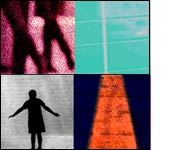

|
"The Recorded, Observed, and Imagined City": Thom Swiss: Hi, Jody. Thanks for giving TIR Web the first glimpse of your new piece, Crowds and Power. Can you tell us a little about how the piece came to be? Jody Zellen: The Crowds and Power site developed from a book project I began working on last summer. I had been collecting images of masses of people from the newspaper and from other media sources and wanted to make a work that focused on the power of crowds. Once I got the book laid out and realized how expensive it would be to print, I decided to expand it to an interactive web work. Although I am still pursuing the printing of the book, the interactive experience strikes me as perhaps more powerful. TS: How do you see this piece in relation to your earlier work? And how do you see it in relation to other artists working in web-based media? JZ: In my work, I explore architectural spaces as well as digital spaces. All my work draws from media sources. I use images from historical archives as well as from the newspaper to explore the relationship between the recorded, the observed, and the imagined city. Crowds and Power is a subset of the website Ghost City. Ghost City, which I began in 1997 and have been working on ever since, is a meditation on urban space. It explores the capacity of mediated images to trigger memory and reverie. It juxtaposes images of old and new cities reflecting my sense of nostalgia for the past, contrasted with my wonder about the future. The project is based on a grid, like the grid of a city and the grid of a newspaper. It begins as a highly structured environment that is eventually invaded by many windows that pop up all over the screen. Ghost City serves as an archive for all my web based work as well as a place for experimentation. For Crowds and Power, I wanted to make a work in which the base page remained constant and where actions (pop-up windows with other images, texts and animations) covered the screen. I see it as a project that uses mediated images to explore the relationship between space, memory and territory. Windows containing image fragments emphasize the displacement of individuals and the transformation of urban space where large gatherings, demonstrations and struggles are represented. I juxtapose charged images with theoretical I look at a lot of web based projects and am drawn toward projects that overtake the desktop space or assault my senses in some way. TS: I know you are recently returned from Croatia. Can you tell us about that visit and what it was like showing your work there and how it was received? JZ: I presented my web works as part of the Urban Festival in Zagreb Croatia in August 2002. We presented the work in a public square projecting the image on the facade of an adjacent building. People gathered to view the work, and it TS: Clearly web-based art is still in its infancy—or close to it. JZ: There are more and more artists and designers making experimental web works. I hope that these projects continue to find audiences and viewer support. I see a lot of Flash based works now -- frankly, they all begin to look the same. I think the goal is to "master" the technology in order to use it to make something original, new, unique. |